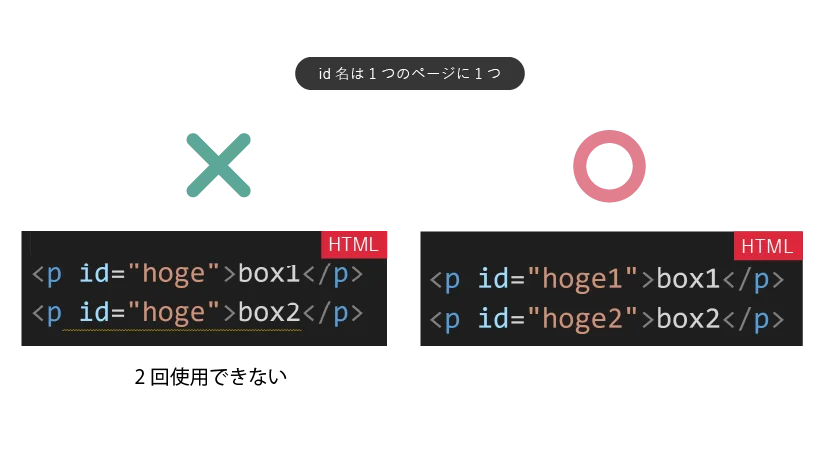
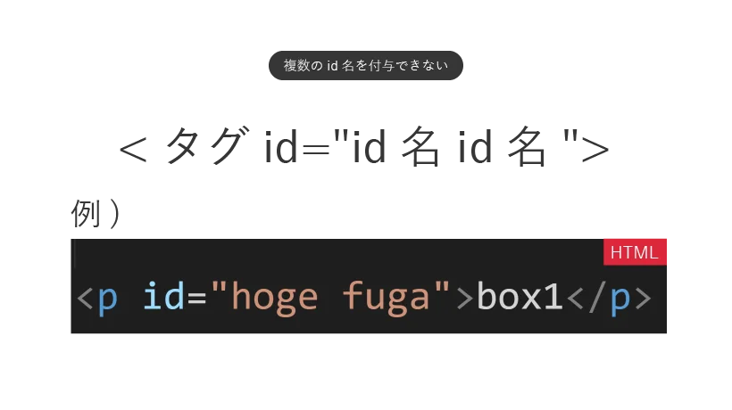
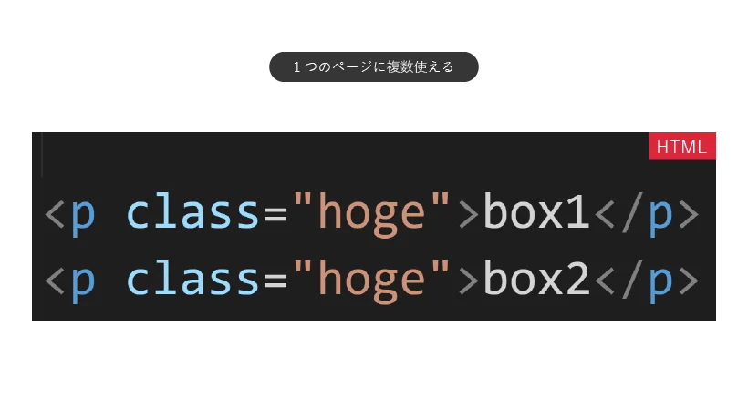
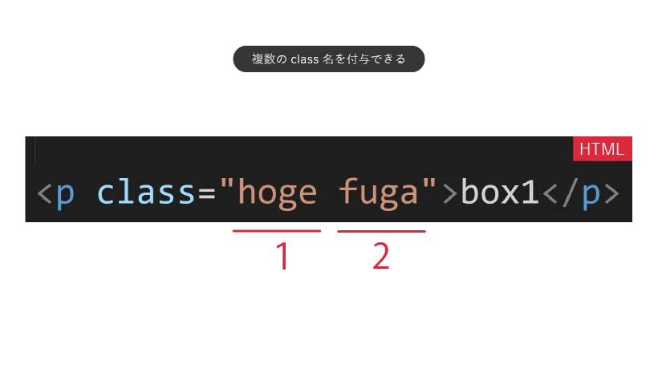

CSS応用編メモ
- ブロックボックス
-
横幅いっぱいに広がり、次の要素が下に配置されていくようなボックス。
<h1>や<p>、<section>、<header>、<footer>、<div>などの要素。 - インラインボックス
- 文中にコンテンツの幅で配置され、次の要素が右に配置されるボックス。
<a>や<img>、<code>、<time>、<span>などの要素。 - インラインボックスの特徴
-
インラインボックスでは、ブロックボックスのプロパティが部分的にしかサポートされない。
例えば、widthやheightnのプロパティはインラインボックスでは無効となる。
また、border、padding、marginは左右方向に対しては有効だが、上下方向に対する指定は無効となる。
更にインラインボックスでは次の要素が右に来るため、marginにおいてautoで振り分けることもできない。 - インラインボックスの余白
- HTMLでテキストの途中に改行や字下げがある場合、ブラウザではインラインボックスの左右に半角空白として反映される。
displayプロパティ
| プロパティ/値 | 名称 | 役割 |
|---|---|---|
display: block; |
ブロック | 指定のボックスの種類をブロックボックスに切り替える。 |
display: inline; |
インライン | 指定のボックスの種類をインラインボックスに切り替える。 |
display: inline-block; |
インラインブロック |
ブロックボックスのように幅や高さが設定できるようにしつつ、次の要素が隣にくる。blockと違い、marginnのauto値は無効となる。
|

classとidの役割の違い
classとidはともに
『特定の要素にCSSを適用させる』際に使用するHTML属性だが、
それぞれには用途や優先順位など違いがある。
| 属性 | HTML | CSS |
|---|---|---|
class |
class="" |
.class名{ } |
id |
id="" |
#id名{ } |
ルール
- id名は１ページに1つだけ 
- １要素に複数のid名は付与できない 
id
- 1つのページに複数のclass名を使える 
- 1要素に複数のclass名を付与できる 
class
positionプロパティ
| コード | 読み | 役割 |
|---|---|---|
position: static; |
スタティック | ポジションプロパティの初期値。明示的に指定することはない。 |
position: relative; |
レラティブ | 相対的位置指定。staticの位置からずらして配置するための指定。その後に続く要素には影響しない。 |
position: absolute; |
アブソリュート |
絶対位置指定。配置したい要素にだけ指定するとブラウザ全体の領域が基準となるが、 この要素を囲む領域に static以外（大抵rerlatibeが使われる）を指定すると、指定した領域を基準に配置されるようになる。 その後に続く要素は詰めて配置される。 |
position: fixed; |
フィックスド |
固定位置指定。absoluteとほぼ同じ動作をするが、abusoluteがブラウザをスクロールすると一緒に流れていくのに対し、この指定ではスクロールをしてもその要素が止まり続ける。 |
動かし方
positionプロパティを動かす際には、top、right、bottom、leftのプロパティと組み合わせて使用するが、top: 16px;と指定すると、「(要素が)上に16px動く」のではなく、「(要素を)上端から16px離す」という挙動が起きる。
また、マイナスの値も指定することができる。
z-index: ;
HTMLでは、"最後に書いたものが最後に配置される"という基本ルールがあるが、
HTMLをいじれない場合などにz-indexのプロパティを用いることで、CSSのみで重なりの順序を制御することが可能。
※psitionでstatic以外を指定している要素にのみ使用することができ、大きな数値を指定するほどに前に配置されるようになる。
object-fit: ;
指定した領域で、置換要素をどのようにはめ込むかを指定するプロパティ。cover;の値を指定することで、置換要素の縦横比を保ちながら、領域内で最大の配置を取る。
opacity: ;
指定した要素の不透明度を操作するプロパティ。0は透明度100%、1が0%のため、0.3などの中間で指定すると、要素が不透明な状態となる。
vertical-align
画像はbaselineという線を基に配置されているため、
文中に画像を配置すると、下部に隙間が生じる。
このbaselineとは違う位置に画像を揃えたい場合に、vertical-alignというプロパティを使用する。
vertical-align: 16px;

vertical-align: -16px;

vertical-align: bottom;

float
要素を左右どちらかに寄せる際に使用するプロパティ。right、leftで指定する。
clear
前にある浮動要素の下へ指定した要素を移動するプロパティ。
「floatプロパティで移動した時に干渉する要素を移動するためのプロパティ」の認識でOK。
display: flow-root;
浮動要素(float)を含む親要素に対し、回り込みを解除するプロパティ。floatがブロックボックスをはみ出してしまう時に、ブロックボックスの枠をfloatに合わせるプロパティ。
backgroundの一括指定プロパティ
backgroundの設定にはいくつかのプロパティを指定できる。
- background-size
-
画像を敷き詰めたい範囲の幅と高さを指定するプロパティ。
値をcontainとすると、画像がはみ出さない最大の大きさで自動で敷き詰め、coverとすると、画像の縦横比を保ちながらなるべく大きく表示される。 - background-positon
-
background-size: coverとしたとき、表示する画像の位置を指定するためのプロパティ。
デフォルトでは左上が起点となるが、中央に寄せたい場合は値をcenterと指定する。
backgroundの一括指定
backgroundプロパティのurl、size、position、colorなどは一括指定することができる。sizeのみ、「positionの後に"
/ "で区切って指定する」というルールがあるが、その他は順不同、省略可能で指定できる。
例
background-image: url(logo.png);background-size: cover;background-position: center;backgroud-ccolor: purple; の場合
→
background:url(logo.png) center/cover purple;
※順不同のため、以下でも可
(background:url(logo.png) purple center/cover;)
(background: center/cover url(logo.png) purple;)
リンク、ボタンのスタイリング
<a>のスタイリング
<a>には、デフォルトで下線や文字色などスタイルが備わっているが、
テキストの状態をリセットするtext-decoration: nane;で下線を消したり、
文字色を文章のデフォルトにするcolor: inherit;を指定してスタイルをリセットできる。
そこから、borderプロパティなどを使いボタンのようにリンクを配置することが可能となる。
<button>のスタイリング
<button>をスタイリングする場合には、初めにall: unset;を使い、デフォルトのスタイリングを全てリセットする。
また、リンクには予め備わっているが、カーソルをボタンの上に移動した際カーソルの形を変えわかりやすくする場合は、cursor: pionter;を指定する。
tableのスタイリング
tableプロパティに枠線をつける場合には、<table>に(①)ではなく、内側の<th>、<td>にborderプロパティを指定する。
また、th、tdにborderを指定するのみではセル間に隙間が生まれてしまう(②)が、tableにborder-collaspe: collapse;を指定することで埋めることができる(③)
border-collapse:
table内のセルの境界を共有するか分離するかを指定するプロパティcollapse;→共有する separate;→分離する
①table{ のみ
border: 1px solid gray;
}
| th | th |
|---|---|
| td | td |
②th{ border: 1px solid gray;
background: lightgray; }
td{ border: 1px solid gray; }
| th | th |
|---|---|
| td | td |
③table{ border-collapse: collapse; }
th{ border: 1px solid gray; }
td{ border: 1px solid gray; }
| th | th |
|---|---|
| td | td |
リストのスタイリング
箇条書きリストの「・」を消すには、list-style:のプロパティを用いてnone;を指定する。
スタイリングの計算
widthなどのプロパティにおいて、CSSでは単位の違う値を計算する場合にはcalcという命令を使用することができる。
width: calc(100% - 16px - 16px);
とすることで、”この領域の幅を横幅100%から、両側16pxずつを引いた値に設定する”という値が設定される。calcの式を設定する場合、計算記号の前後には半角空白を入れる必要があることに注意。
px 以外の単位 em,rem
em
それぞれの要素に設定されているフォントサイズの"何文字分"かという意味の単位
rem
emに対し、文書全体で設定された文字サイズを基準にした単位
カラーリングの指定
RGB
Red,Green,blueそれぞれの配色の混合割合を0〜255の数値で表す方法
16進数を用いて表現することも可能。
#を頭に置き、最大値255 = ff,最小値0 = 00と置く。
rgb(255 0 0) = #ff0000 = 赤
HSL
Hue（色相環）を用いた方法。
degree(角度)で色を指定する。単位はdeg
そこに、Saturation（彩度）、Lightness（輝度）を％で指定するという方法
hsl(0deg 100% 50%)
HWB
Hue（色相環）に、WhiteとBlackの混ぜ具合いを指定する方法。
hwb(0deg 50 10)
不透明度
カラーを指定した後に、 / をつけてから0〜1で不透明度を指定できる。
rgb(255 0 0 / .3)
hsl(0 100 50 / .3)
CSS変数
一括で編集したいプロパティを管理するための要素。
はじめに、:rootというセレクターを用いて、プロパティには必ずハイフン２文字で始まる任意の名前、その名前で管理したい値を設定する。
そして、その値を指定したいところにはvar( )と置いて、括弧内に上で指定したプロパティ名（ハイフン２文字で始まるプロパティ）を宣言することで、;rootセレクター内の値を編集すれば指定した値全てが一括で編集できるようになる。
:root{ --main-color:h1{ color:var(
p{ color:var(